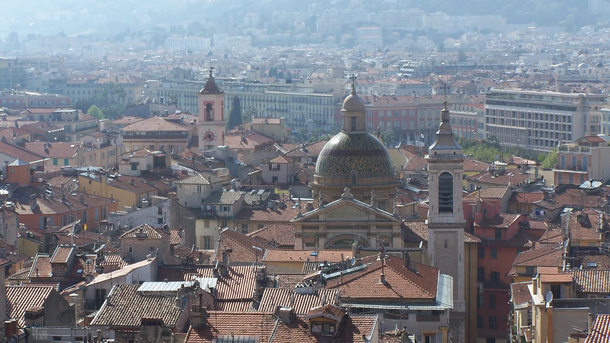

{kind=link}
관광·미술관
Nous avons déjà des billets.
이미 표가 있습니다.
누 자봉 데자 데 비예

니스는 1860년 토리노 조약으로 프랑스에 영구 편입되기 전까지 500년 가까이 사보이 백작령(이후 피에몬테-사르데냐 왕국)의 영토였다. 따라서 비외 니스는 프랑스식 격자망 도시가 아니라, 제노바와 토리노를 닮은 좁고 높은 이탈리아식 미로 구조를 완벽히 간직하고 있다.
파스텔톤 황토색(Ochre), 살구색, 테라코타빛 회반죽 벽면과 햇빛을 조절하는 녹색 덧창(Persiennes), 건물 사이에 걸린 빨랫줄, 그리고 골목 모퉁이를 돌 때마다 나타나는 바로크 성당과 작은 광장들이 독특한 지중해의 서정을 자아낸다.
골목 중심인 로세티 광장(Place Rossetti)에는 17세기 바로크 양식의 생트 레파라트 대성당(Cathédrale Sainte-Réparate)이 돔을 얹고 서 있으며, 광장 주변의 야외 카페와 전통 젤라토 가게들이 니스의 활기찬 밤 문화를 이끈다.
프랑스 현대 도시의 세련됨 뒤에 숨겨진 진정한 니스의 역사와 로컬 라이프스타일을 만나는 곳이다. 대성당 앞 로세티 광장에서 수제 젤라토를 맛본 후, 뤼 드루아트(Rue Droite)의 오래된 공방 골목을 지나 팔레 라스카리스(Palais Lascaris)를 둘러보는 60~75분 산책 코스를 강력히 추천한다.
| 운영시간 | 골목은 시간 제한 없음. 쿠르 살레야 시장은 오전 중심이며 월요일 골동품 시장은 07:00~18:00 |
|---|---|
| 휴무 | 골목은 연중 개방. 중심 쿠르 살레야는 화~일 꽃·청과 시장, 월요일은 골동품 시장으로 전환 |
| 예약 | 예약 불필요 |
| 소요시간 | 60–75분 재확인 |
| 항목 | 상세 정보 |
|---|---|
| 위치 | Vieux Nice, 06300 Nice, France |
| 운영/요금 | 구시가지 자유 산책 / 무료 |
| 생트 레파라트 성당 | 화–일 09:00–12:00, 14:00–18:00 (월요일 휴관 / 무료 입장) |
| 팔레 라스카리스 | 수–월 10:00–18:00 (화요일 휴관 / 입장료 €5.00) |
| 접근 교통 | 트램 1호선(L1) Cathédrale-Vieille Ville 또는 Opéra-Vieille Ville 정거장 |
🍨 미식 팁: 로세티 광장의 페노키오(Fenocchio)는 라벤더, 올리브, 로즈마리, 무화과 등 90가지가 넘는 수제 젤라토 맛을 선보이는 니스 명물입니다.
비외 니스의 건물 벽면을 유심히 살펴보면, 실제 창문이나 석조 기둥이 아니라 정교하게 그려 넣은 눈속임 벽화(Trompe-l'œil)가 유독 많다. 과거 사보이 왕국 시절 창문의 개수에 따라 세금을 부과했던 시절의 흔적이자, 좁은 골목 안에서 건물의 대칭미와 화려함을 살리기 위해 제노바 장인들이 도입한 건축 기법이다.
Nous avons déjà des billets.
이미 표가 있습니다.
누 자봉 데자 데 비예
On peut prendre des photos ?
사진 찍어도 되나요?
옹 푀 프랑드르 데 포토
Où commence la visite ?
관람은 어디서 시작하나요?
우 코망스 라 비지트

국제영화제의 상징 크루아제트 대로와 호화 요트 항구, 그리고 11세기 중세 어촌의 원형 르 쉬케 언덕이 공존하는 코트다쥐르의 영화 도시.

해발 92m 바위 절벽 위에서 천사의 만(Baie des Anges)과 구시가지, 림피아 항구를 360도 파노라마로 굽어보는 니스 최고의 천연 전망 공원.

지중해 꽃과 프로방스 제철 식재료, 그리고 갓 구워낸 니스 전통 소카(Socca)를 맛보는 유서 깊은 야외 시장 광장.

지중해로 60m 솟아오른 천연 바위 절벽 위에 조성된 모나코 대공국의 역사적 심장부이자 왕궁 마을.

크루아제트의 화려함 뒤에 숨겨진 11세기 옛 어촌의 가파른 돌계단 골목과 정상 성당에서 바라보는 칸 만의 파노라마.

칸 주민들의 부엌이자 지중해 해산물, 프로방스 과일, 꽃, 치즈가 가득한 1934년 유서 깊은 철골 재래시장.